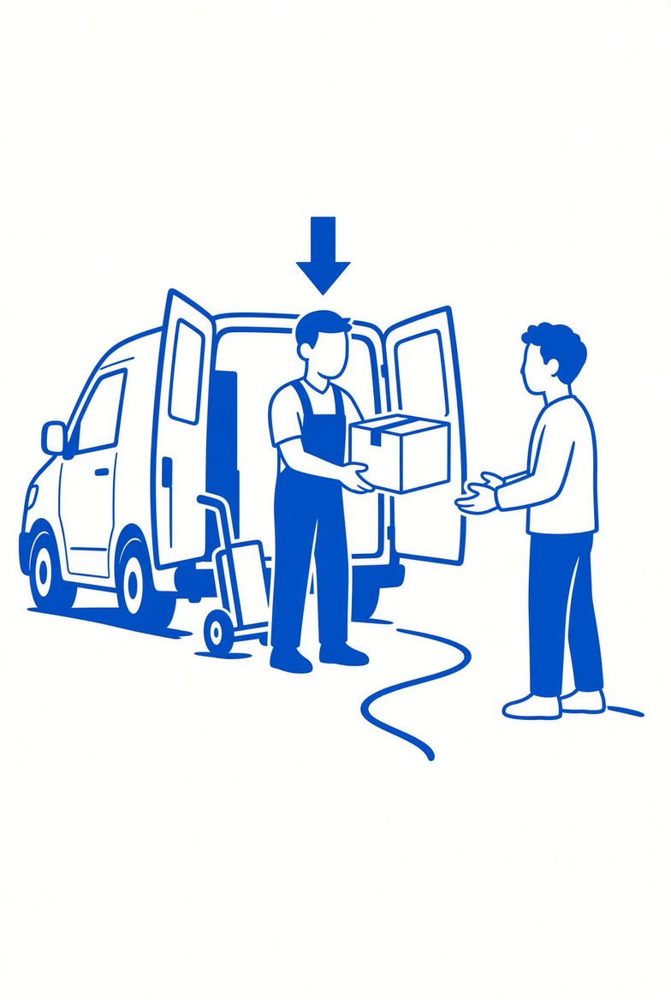
leveren
to supply
regelmatigrang 1129Money & tradegetekend
- Scene
- one adult in overalls stands at the open back of a small van holding a closed cardboard box out with both hands towards a second adult on a path; the box is halfway between them and the van's doors are swung wide. A hand truck leans at the van. Above the head of the adult in overalls delivering floats one bold solid cobalt arrow pointing straight down at the head, with a clear white gap between arrow tip and hair; it marks who performs the verb. The other person has no arrow. No text.
- Must read
- a box held out from a van's open back to a person on a path.
- Avoid
- a box passing between two people at a table (geven); one adult rolling a trolley along a shelf (boodschappen); a stack of boxes carried against the chest (dragen); a clipboard with a signature; a shop counter with a price.
- Alt text
- Iemand in een overall reikt bij een busje een doos aan naar een ander op het pad.
- Example
- Het bedrijf levert groente aan restaurants.
The company supplies vegetables to restaurants.
leveren.png · rang 1129 · B2 regelmatig · lexicon woorden.tsv

verwijderen
to remove
regelmatigrang 1138Movement & positiongetekend
- Scene
- one adult bends over a rubbish bin, one hand already holding a crumpled sheet of paper inside it and letting go, the fingers just opening; the bin is white and empty beneath. No other person and nothing else in the picture.
- Must read
- fingers just opening above a bin with the crumpled paper inside it.
- Avoid
- a sheet held up before a second person (tonen); a page taken from a shelf into a bag (pakken); a broom sweeping a floor; a bin bag tied at the top; a hand held flat against the chest (houden).
- Alt text
- Iemand buigt boven een prullenbak en laat een verfrommeld vel papier in de bak vallen.
- Example
- Ik verwijder de oude foto's van mijn telefoon.
I remove the old photos from my phone.
verwijderen.png · rang 1138 · B2 regelmatig · lexicon woorden.tsv

ondersteunen
to support (help)
regelmatigrang 1658Character & behaviourgetekend
- Scene
- two adults walk slowly side by side on a plain path; the one on the right is older and leans a little, and the one on the left holds that person's elbow with one hand and the back with the other, looking at them. Nothing else in the picture.
- Must read
- one adult holding another's elbow and back as that person leans on them.
- Avoid
- two people carrying one box between them (helpen); a hug with both arms round the neck (omarmen); a person pushing a wheelchair; a person lifting a heavy shelf; a hand patting a shoulder.
- Alt text
- Iemand houdt een oudere persoon bij de elleboog en de rug vast terwijl die leunend loopt.
- Example
- De gemeente wil de familie ondersteunen.
The municipality wants to support the family.
ondersteunen.png · rang 1658 · B2 regelmatig · lexicon woorden.tsv

verplaatsen
to move (an object)
regelmatigrang 2320Movement & positiongetekend
- Scene
- one adult stands in a plain room holding a wooden chair off the floor with both hands, carrying it from the left side towards a pale square marked on the floor at the right, one step taken. Nothing else in the picture.
- Must read
- a chair lifted off the floor and carried from one spot to another.
- Avoid
- a person dragging a chair along the floor (slepen); a person sitting down on the chair (zitten); a box carried to a doorway (dragen); a trolley pushed along (duwen); arrows or dotted paths.
- Alt text
- Iemand draagt een stoel met twee handen van de ene plek in de kamer naar een andere plek.
- Example
- Wij verplaatsen de kast naar de andere kamer.
We move the cupboard to the other room.
verplaatsen.png · rang 2320 · B2 regelmatig · lexicon woorden.tsv

wisselen
to exchange
regelmatigrang 2353Abstract & generalgetekend
- Scene
- two adults stand facing each other an arm's length apart, each holding out one object to the other: the left person an apple, the right person a loaf of bread. Both objects are caught halfway, side by side between the two pairs of hands. Both look at what they are about to receive.
- Must read
- two different objects passing in opposite directions between two people.
- Avoid
- one box passing one way only (geven); coins and notes on a counter (betalen); two people shaking hands (groeten); a shop shelf with a price (kopen); a ring of arrows.
- Alt text
- Twee mensen staan tegenover elkaar en houden elk een ander voorwerp naar de ander uit; de voorwerpen kruisen elkaar.
- Example
- Wij wisselen vandaag onze telefoonnummers.
We exchange phone numbers today.
wisselen.png · rang 2353 · B2 regelmatig · lexicon woorden.tsv

arresteren
to arrest
regelmatigrang 2551Law & conflictgetekend
- Scene
- a large pair of handcuffs, two thick solid rings joined by a short chain, with the cuffs closed on two separate forearms held out together, each forearm ending in its own clearly outlined white fist with no hand overlapping the other; the arm tubes start at least 8% in from both left and right edges; nothing else.
- Must read
- handcuffs closing round two wrists held out together.
- Avoid
- one adult sitting behind a high wooden desk (rechtspreken); two adults in a fist fight (vechten); one hand pulling another person by the arm (wegsturen); a handshake between two adults (afspreken); bars or a prison cell.
- Alt text
- Een paar handboeien sluit zich om twee polsen die naar voren worden gehouden.
- Example
- De politie arresteert de man vlak bij het station.
The police arrest the man close to the station.
arresteren.png · rang 2551 · B2 regelmatig · lexicon woorden.tsv

waarschuwen
to warn
regelmatigrang 2656Communication & languagegetekend
- Scene
- one adult holds up one flat palm towards a second adult who is walking towards the edge of a cliff with eyes fixed ahead; the first adult’s mouth is open mid-shout and the raised arm stretches out. The second adult is one stride from the drop. The entire cliff and both ground lines sit inside the frame with a white margin on all sides; the cliff base does not reach the bottom edge.
- Must read
- a raised flat palm and a shout stopping a walker at the cliff edge.
- Avoid
- a triangle sign on a stick beside the path (verbieden); a hand chopping the air near a phone (onderbreken); a finger wagging in another person’s face (berispen); a door held shut; a siren with nobody present.
- Alt text
- Een volwassene steekt een open hand op naar iemand die bijna over de rand van een klif stapt.
- Example
- De buurman waarschuwt ons voor het gladde ijs.
The neighbour warns us about the slippery ice.
waarschuwen.png · rang 2656 · B2 regelmatig · lexicon woorden.tsv
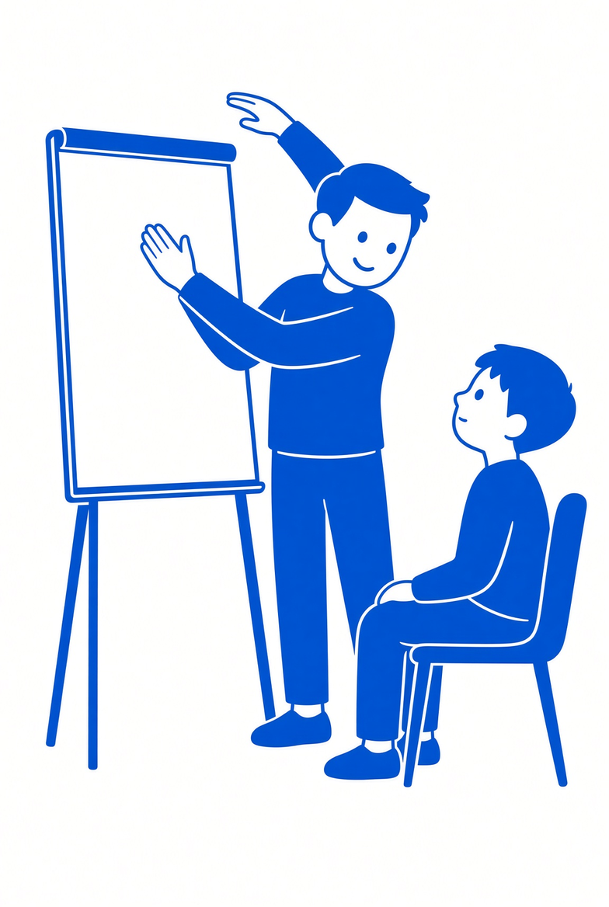
presenteren
to present
regelmatigrang 2765Communication & languagegetekend
- Scene
- one adult stands beside a tall flip chart with one open palm laid flat against the board and the other arm sweeping up towards its top; the flip chart pages are blank, and one adult sits facing the board with their heads up and eyes on it. No lettering on the board.
- Must read
- one open palm held flat on a flip chart facing an audience.
- Avoid
- a trophy held up in both hands (winnen); a sheet of paper handed over (geven); a shopkeeper turning a price sign (kosten); two adults shaking hands (afspreken).
- Alt text
- Een spreker legt een open hand op een leeg flipovervel en wijst met de andere arm naar boven.
- Example
- Zij presenteert haar plan aan het hele team.
She presents her plan to the whole team.
presenteren.png · rang 2765 · B2 regelmatig · lexicon woorden.tsv
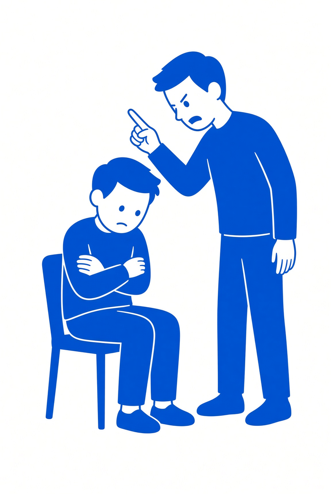
straffen
to punish
regelmatigrang 2937Abstract & generalgetekend
- Scene
- one adult shrinks on a chair while a second adult stands over them with one pointing finger raised and the head lowered towards the first; the seated adult’s arms are pulled in and their eyes are down. Both adults, and no parent or child is shown, and no belt or cane.
- Must read
- one raised pointing finger above a person sitting down.
- Avoid
- a police officer with handcuffs (arresteren); a cane or a belt raised in the air; an open hand swung at a face (slaan); two adults in a fist fight (vechten); a locked cell door.
- Alt text
- Iemand zit ineengezakt op een stoel terwijl een staande volwassene een vinger op hen richt.
- Example
- Ouders willen hun kind niet te streng straffen.
Parents do not want to punish their child too harshly.
straffen.png · rang 2937 · B2 regelmatig · lexicon woorden.tsv
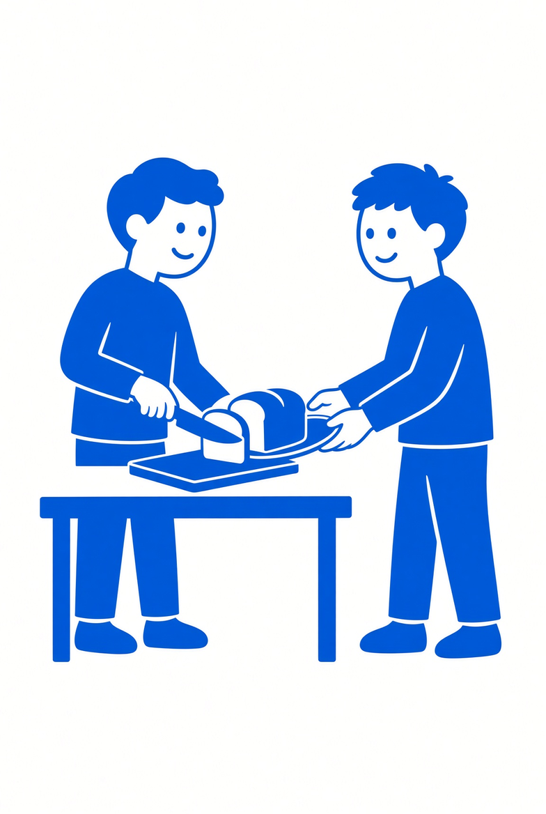
verdelen
to divide
regelmatigrang 2985Movement & positiongetekend
- Scene
- one adult cuts a loaf in two on a board with a bread knife, and one half slides onto a plate held out by a second adult; only these two figures are in the picture.
- Must read
- a loaf cut in two with one half going onto an outstretched plate.
- Avoid
- one adult handing a whole loaf to a second (geven); a shopkeeper taking coins (betalen); two adults each holding an end of a loaf (delen); a tray of drinks set down in front of a group.
- Alt text
- Iemand snijdt een brood doormidden en schuift een helft op het bord van een wachtende.
- Example
- Wij verdelen de taken onder de kinderen.
We divide the tasks among the children.
verdelen.png · rang 2985 · B2 regelmatig · lexicon woorden.tsv

registreren
to register
regelmatigrang 3022Society & politicsgetekend
- Scene
- one adult stands behind a low counter and brings a round rubber stamp down onto a closed folder, the stamp’s base a finger’s width above the cover; a second folder already stamped with a dark ring lies beside it, and a stack of blank sheets waits at hand.
- Must read
- one rubber stamp pressing down on a folder at a counter.
- Avoid
- an ink pad beside a pile of envelopes (posten); a hand held up showing a thumb print (identificeren); a pen on a form (schrijven); a price sign on a shelf (kosten); a laptop (typen).
- Alt text
- Iemand achter een balie drukt een ronde stempel op een map; een tweede map is al gestempeld.
- Example
- U moet zich online registreren voor de cursus.
You must register online for the course.
registreren.png · rang 3022 · B2 regelmatig · lexicon woorden.tsv

schatten
to estimate
regelmatigrang 3023Quantity & measuregetekend
- Scene
- one adult stands side-on, full figure, the eye on the viewer's side drawn as a clear tight squint with the face frowning slightly in concentration, one arm stretched straight out in front with the thumb raised, looking along it at a stack of five separate outlined white blocks with cobalt outlines standing on the ground ahead; nothing else.
- Must read
- an arm stretched out with a thumb raised, one eye shut, sizing up a stack.
- Avoid
- a tape measure or a ruler (meten); a calculator and loose coins; a balance with two pans (wegen); bare hands at the sides while looking away (kijken).
- Alt text
- Iemand knijpt één oog dicht en houdt een duim omhoog voor een stapel.
- Example
- Hoeveel mensen komen er volgens jou? Kun je dat schatten?
How many people are coming, do you think? Can you estimate it?
schatten.png · rang 3023 · B2 regelmatig · lexicon woorden.tsv

stromen
to flow
regelmatigrang 3026Movement & positiongetekend
- Scene
- one adult stands with a garden hose held low and lets water run out along a narrow channel dug between two raised beds; the water lies in the channel as one dark ribbon flowing away in the direction the hand points. A bucket stands dry beside a spade.
- Must read
- water running as one ribbon along a dug channel.
- Avoid
- a kettle on a stove (koken); a person staring at a tap; a barrel carried full in both arms (tillen); a row of wet paving stones (regen); a stream with nobody about.
- Alt text
- Een volwassene laat water uit een tuinslang door een gegraven geul lopen.
- Example
- Het water stroomt snel onder de brug door.
The water flows quickly under the bridge.
stromen.png · rang 3026 · B2 regelmatig · lexicon woorden.tsv
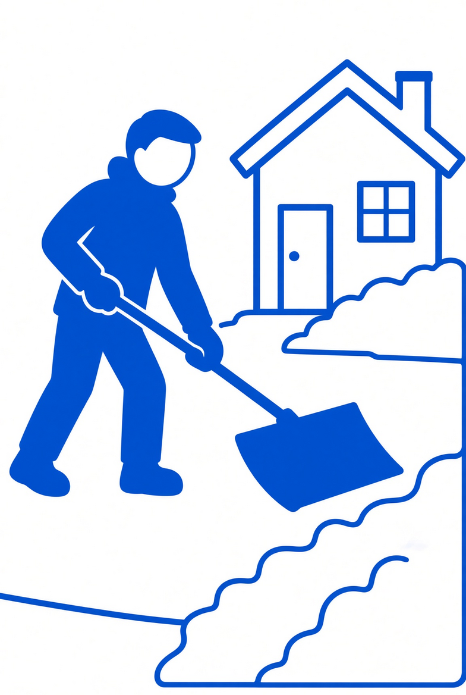
ruimen
to clear (snow, rubble)
regelmatigrang 3212Nature & weathergetekend
- Scene
- one adult in a winter coat pushes a wide snow shovel along the pavement outside a house, both hands on the handle; behind the shovel the path is bare and clean, ahead of it the snow lies thick, and a low heap of pushed snow rises at the kerb. Nothing else in the picture.
- Must read
- a clean strip of path behind a snow shovel, thick snow ahead of it.
- Avoid
- a long broom pushing crumbs indoors (vegen); a spade digging into soil (graven); flakes falling from the sky; children throwing snowballs (gooien); toys put away into a box.
- Alt text
- Iemand in een winterjas houdt een brede sneeuwschuiver; achter de schuiver ligt het pad schoon, ervoor ligt dikke sneeuw.
- Example
- De gemeente ruimt vroeg de sneeuw van de weg.
The municipality clears the snow from the road early.
ruimen.png · rang 3212 · B2 regelmatig · lexicon woorden.tsv
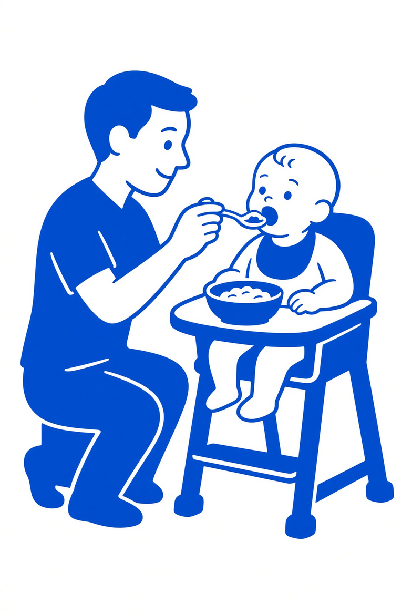
voeden
to feed (a baby)
regelmatigrang 3219Food & drinkgetekend
- Scene
- one adult sits beside a baby in a high chair and holds a small spoon of food to the baby's open mouth; the baby leans forward, a bowl stands on the high-chair tray and a bib hangs from the baby's neck. Nobody else in the picture.
- Must read
- a small spoon held to a baby's open mouth.
- Avoid
- bread thrown to ducks (voeren); a person eating alone from a bowl (eten); a crying baby with an empty tray (huilen); a bottle given to a lamb.
- Alt text
- Een volwassene houdt een lepeltje bij de open mond van een baby in een kinderstoel.
- Example
- Zij moet haar baby elke drie uur voeden.
She has to feed her baby every three hours.
voeden.png · rang 3219 · B2 regelmatig · lexicon woorden.tsv

schakelen
to change gear
regelmatigrang 3308Transport & travelgetekend
- Scene
- seen from the passenger seat, one adult sits behind the steering wheel of a small car with the eyes on the road through the windscreen; the left foot presses the clutch pedal down and the right hand moves the gear stick from one slot to the next. No other people and nothing on the dashboard.
- Must read
- a hand moving the gear stick while one foot holds the clutch pedal down.
- Avoid
- both hands on the steering wheel and none on the gear stick (rijden); a hand turning the key in the ignition (starten); a foot stamping on the brake (remmen); a finger pressing a light switch on a wall.
- Alt text
- Iemand achter het stuur van een auto legt een hand op de pook en trapt een pedaal in.
- Example
- Hij leert in de auto schakelen.
He is learning to change gear in the car.
schakelen.png · rang 3308 · B2 regelmatig · lexicon woorden.tsv
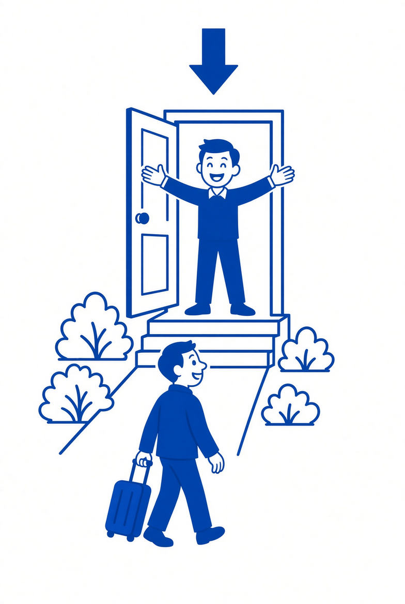
verwelkomen
to welcome
regelmatigrang 3702People & relationsgetekend
- Scene
- one adult stands in an open front doorway with both arms spread wide towards a second adult who is coming up the path with a small suitcase; both smile and the visitor is one step from the door. Above the head of the host welcoming in the doorway floats one bold solid cobalt arrow pointing straight down at the head, with a clear white gap between arrow tip and hair; it marks who performs the verb. The other person has no arrow. No text.
- Must read
- open arms in a doorway facing an arriving guest.
- Avoid
- two people with arms around each other (knuffelen); a person leaving with a suitcase (vertrekken); a key turning in a door (openen); a hand raised in a wave from far away.
- Alt text
- Iemand staat in een open voordeur met wijd gespreide armen voor een gast met een koffertje.
- Example
- Wij verwelkomen de gasten bij de deur.
We welcome the guests at the door.
verwelkomen.png · rang 3702 · B2 regelmatig · lexicon woorden.tsv
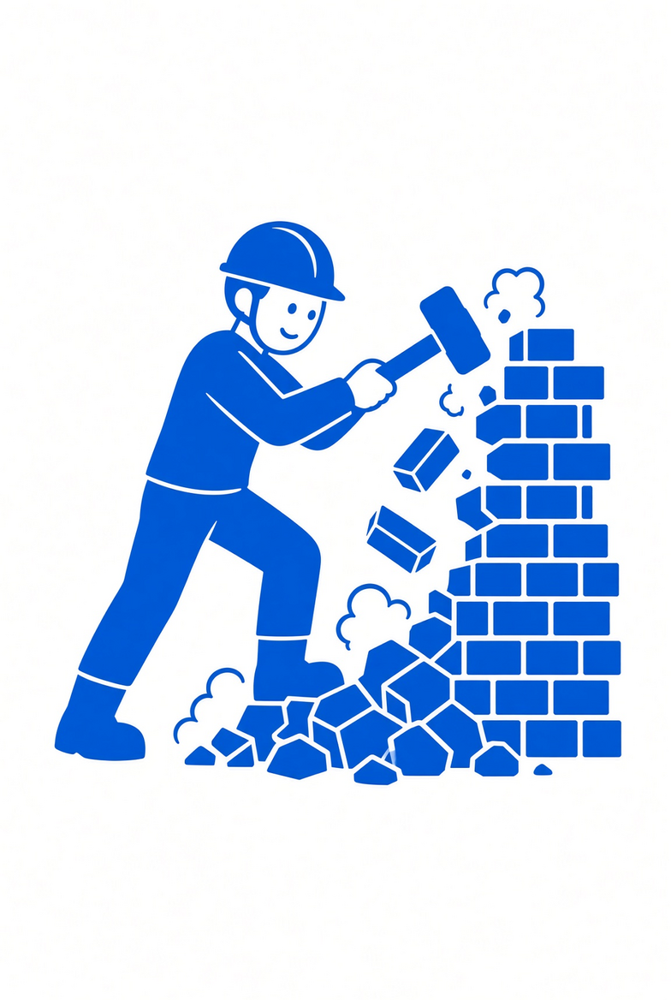
slopen
to demolish
regelmatigrang 4632Technology & toolsgetekend
- Scene
- one worker in a helmet swings a heavy sledgehammer into a brick wall; a section has already caved in and loose bricks fall onto a pile below, with small dust puffs round the hole.
- Must read
- a sledgehammer knocking bricks out of a wall.
- Avoid
- a plate dropping and breaking on the floor (breken); a wall laid brick by brick (bouwen); a hammer on a nail in a box (maken); a drill going into a wall (boren).
- Contrast
- Pair with bouwen. Same brick wall: the sledgehammer knocks bricks out here, a brick is lowered into place there.
- Alt text
- Een arbeider met een helm slaat met een zware hamer een gat in een bakstenen muur.
- Example
- Ze gaan het oude huis slopen.
They are going to demolish the old house.
slopen.png · rang 4632 · B2 regelmatig · lexicon woorden.tsv

isoleren
to insulate
regelmatigrang 4806House & homegetekend
- Scene
- no person: two thick parallel roof beams as vertical bars with a gap between them; a thick soft wool mat fills the gap with its top half already inside the gap and its bottom edge bulging out below, and two outlined white hands pressing it in from both sides; nothing else.
- Must read
- a thick soft mat pressed into the gap between two roof beams.
- Avoid
- a hammer nailing a plank to a beam (bouwen); a person carrying a rolled mat up a ladder (dragen); a blanket laid over a bed (leggen); hands fixing a loose part with a spanner (repareren).
- Alt text
- Iemand op de knieën op een zolder drukt een dikke zachte laag wol tussen twee dakbalken.
- Example
- We laten het dak isoleren om energie te besparen.
We are having the roof insulated to save energy.
isoleren.png · rang 4806 · B2 regelmatig · lexicon woorden.tsv

kraken
to crack (a nut)
regelmatigrang 4809Food & drinkgetekend
- Scene
- one adult holds a nutcracker in one hand and squeezes a walnut between its jaws, the shell splitting open with small pieces flying; a bowl of whole nuts stands on the table.
- Must read
- a nutcracker splitting a walnut shell.
- Avoid
- a plate dropping and breaking (breken); half a lemon pressed onto a juicer (persen); a cheek pinched between finger and thumb (knijpen); a hammer on a nail (maken).
- Alt text
- Iemand zet een notentang om een walnoot; de schaal springt open en er vliegen stukjes weg.
- Example
- Ik kan deze harde noot niet kraken.
I cannot crack this hard nut.
kraken.png · rang 4809 · B2 regelmatig · lexicon woorden.tsv
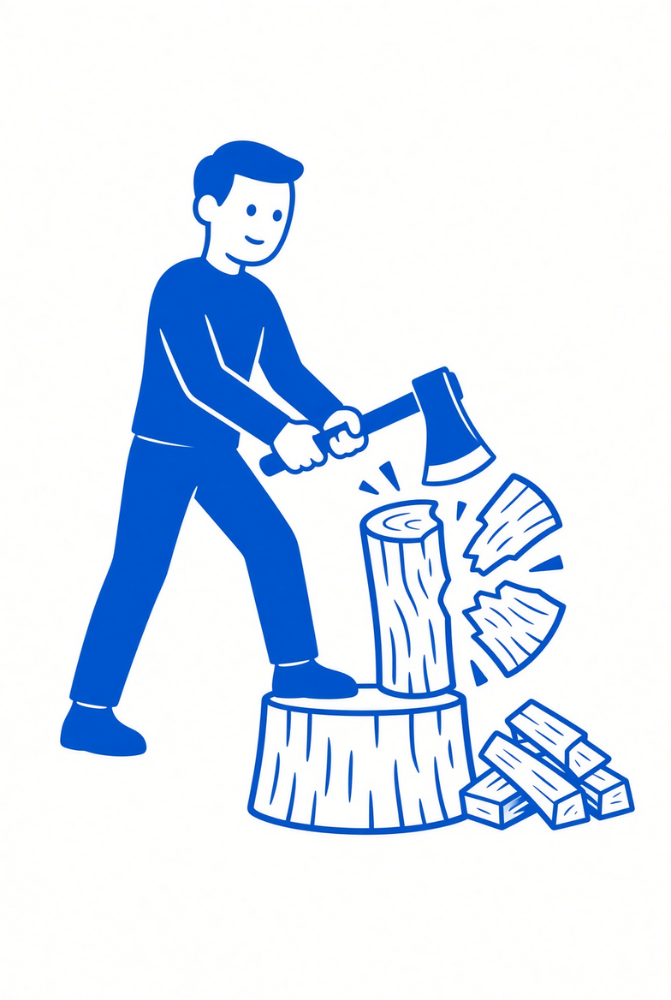
hakken
to chop (wood)
regelmatigrang 6000Technology & toolsgetekend
- Scene
- one adult brings an axe down two-handed on a log standing on a chopping block; the two halves are just flying apart and a small pile of split wood lies beside.
- Must read
- an axe splitting a log on a block.
- Avoid
- a saw through a plank (zagen); a rope tied round firewood (binden); a sledgehammer on a wall (slopen); a knife through bread (snijden).
- Alt text
- Iemand slaat met een bijl een blok hout op een stronk in tweeën.
- Example
- Mijn buurman hakt hout voor de kachel.
My neighbour chops wood for the stove.
hakken.png · rang 6000 · B2 regelmatig · lexicon woorden.tsv

remmen
to brake
regelmatigrang 6000Transport & travelgetekend
- Scene
- a close view of a bicycle handlebar with one hand squeezing a brake lever, the front wheel below it, and a short thick skid streak lying on the ground behind the wheel; nothing else, no rider.
- Must read
- a hand squeezing a brake lever with a skid mark behind the wheel.
- Avoid
- a cyclist riding along freely (fietsen); a car standing in a bay (parkeren); a foot caught on a stone (struikelen); a cyclist standing still at a kerb (stoppen).
- Alt text
- Een hand knijpt in een remhendel; achter het wiel ligt een korte remstreep.
- Example
- Ik moest hard remmen, omdat er plotseling een kind overstak.
I had to brake hard because a child suddenly crossed the street.
remmen.png · rang 6000 · B2 regelmatig · lexicon woorden.tsv
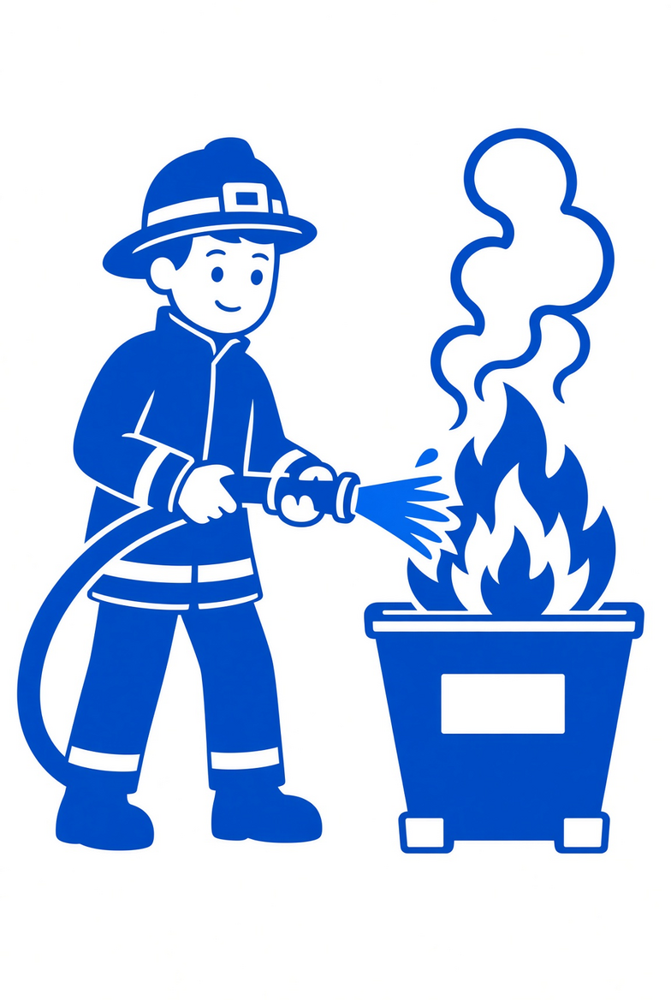
blussen
to put out (a fire)
regelmatigrang 6075Work & jobsgetekend
- Scene
- one firefighter in helmet and coat aims a hose at a small fire in a waste skip; a strong jet of water hits the flames, which are already shrinking. Nobody else is in the picture, and smoke curls up above the skip.
- Must read
- a hose jet hitting flames.
- Avoid
- water sprayed at a plant (spuiten); a loaf burning in an oven (verbranden); water falling from a shower head (douchen); a candle blown out (blazen).
- Alt text
- Iemand van de brandweer richt een slang op de vlammen in een container; de straal raakt het vuur.
- Example
- De brandweer kan het vuur snel blussen.
The fire brigade can put out the fire quickly.
blussen.png · rang 6075 · B2 regelmatig · lexicon woorden.tsv

reiken
to reach (for)
regelmatigrang 6190Movement & positiongetekend
- Scene
- one adult stands on tiptoe in a kitchen, one arm stretched as far as it goes towards a jar on the top shelf, the fingertips just short of it. The heels are off the floor and the free hand presses on the counter for balance.
- Must read
- fingertips stretched towards a jar just out of reach.
- Avoid
- a hand closing round a mug on a shelf (pakken); a suitcase held above the head (tillen); a person on a ladder (klimmen); a fingertip on a glass (raken).
- Alt text
- Iemand staat op de tenen en strekt een arm naar een pot op de bovenste plank, net te ver.
- Example
- De jongen reikt naar het boek op de plank.
The boy reaches for the book on the shelf.
reiken.png · rang 6190 · B2 regelmatig · lexicon woorden.tsv

botsen
to bump (into)
regelmatigrang 6290Transport & travelgetekend
- Scene
- two children in bumper cars at a fair meet front to front, both jolted forward in their seats, with short lines at the point of contact. Each child grips a small steering wheel with both hands, mouth open in surprise; the floor is otherwise empty.
- Must read
- two bumper cars meeting nose to nose.
- Avoid
- a car standing in a bay (parkeren); a knee bumped on a table (stoten); a cyclist squeezing the brakes (remmen); a car driving along a road (rijden).
- Alt text
- Twee kinderen in autootjes op de kermis komen met de neuzen tegen elkaar en schieten naar voren.
- Example
- De fietser botst tegen een geparkeerde auto.
The cyclist crashes into a parked car.
botsen.png · rang 6290 · B2 regelmatig · lexicon woorden.tsv

toveren
to do magic
regelmatigrang 6415Arts & mediagetekend
- Scene
- one magician in a top hat and cape holds a short wand over an upside-down hat on a table, and a rabbit's head pops out of the hat; the magician's other hand is raised.
- Must read
- a rabbit popping out of a hat under a wand.
- Avoid
- an object hidden behind the back (verbergen); a figure half behind a wall (verdwijnen); a person juggling balls; a rope pulled with both hands (trekken).
- Alt text
- Iemand met een hoge hoed houdt een stokje boven een hoed waar een konijn uit komt.
- Example
- De goochelaar tovert een konijn uit zijn hoed.
The magician conjures a rabbit out of his hat.
toveren.png · rang 6415 · B2 regelmatig · lexicon woorden.tsv

troosten
to comfort
regelmatigrang 6417Emotion & feelinggetekend
- Scene
- one adult sits on a bench beside a crying child, one arm round the child's shoulders and the other hand offering a tissue; the child leans against the adult. Nobody else is in the picture.
- Must read
- an arm round a crying child's shoulders.
- Avoid
- a person crying alone (huilen); a bandage round an arm (verbinden); a child hugging a teddy (knuffelen); lips on a cheek (zoenen).
- Alt text
- Iemand zit naast een huilend kind, een arm om de schouders, en biedt een zakdoekje aan.
- Example
- Ik probeer mijn huilende zoontje te troosten.
I try to comfort my crying little son.
troosten.png · rang 6417 · B2 regelmatig · lexicon woorden.tsv

lassen
to weld
regelmatigrang 6470Technology & toolsgetekend
- Scene
- one worker in a face shield kneels beside two metal pipes and holds a torch to the joint between them; a burst of sparks flies from the point. The pipes rest on two trestles and nothing else is in the picture.
- Must read
- sparks flying from a torch at the joint of two pipes.
- Avoid
- a drill going into a wall (boren); a saw through a plank (zagen); a hose aimed at flames (blussen); a hammer on a nail (maken).
- Alt text
- Een arbeider met een kap voor het gezicht houdt een brander tegen de naad van twee buizen; er spatten vonken.
- Example
- De monteur gaat de kapotte pijp lassen.
The mechanic is going to weld the broken pipe.
lassen.png · rang 6470 · B2 regelmatig · lexicon woorden.tsv

leunen
to lean
regelmatigrang 6994Movement & positiongetekend
- Scene
- one adult stands at a slant with one shoulder resting against a wall, ankles crossed and arms folded, the whole weight on the wall, waiting. The wall is plain brick, the feet stand a little way out from it, and nothing else is in the picture.
- Must read
- a body resting at a slant with one shoulder on a wall.
- Avoid
- a person standing upright (staan); a person on a chair (zitten); both palms pushed against a crate (duwen); a person lying down (liggen).
- Alt text
- Iemand staat schuin met één schouder tegen een muur, de enkels gekruist en de armen over elkaar.
- Example
- Ze leunt tegen de muur en wacht op de bus.
She leans against the wall and waits for the bus.
leunen.png · rang 6994 · B2 regelmatig · lexicon woorden.tsv

mediteren
to meditate
regelmatigrang 6999Body & healthgetekend
- Scene
- one adult sits on a mat with the legs folded in front on the floor, back straight, eyes closed, hands resting palms up on the knees; nothing else in the room.
- Must read
- a seated figure with folded legs, closed eyes and open palms on the knees.
- Avoid
- a person lying asleep (slapen); hands folded with the head bowed (bidden); chin on a fist with a thought bubble (denken); a person upright on both knees (knielen).
- Alt text
- Iemand zit met gekruiste benen op een mat, rug recht, ogen dicht, handpalmen open op de knieën.
- Example
- Ik mediteer elke ochtend tien minuten.
I meditate for ten minutes every morning.
mediteren.png · rang 6999 · B2 regelmatig · lexicon woorden.tsv
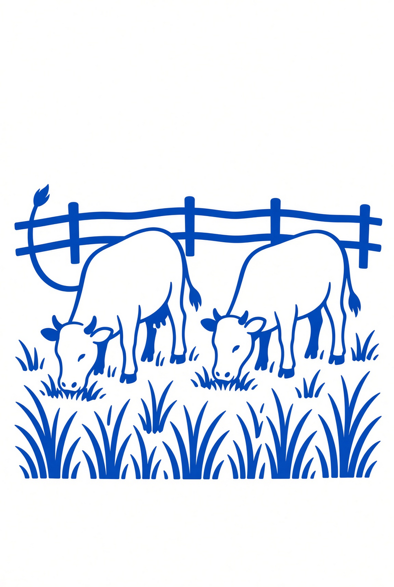
grazen
to graze
regelmatigrang 7141Animalsgetekend
- Scene
- two cows stand in a meadow with their heads down, pulling at the grass with their mouths; a fence runs behind. No person in the picture. One cow swishes its tail; the grass is long round their legs.
- Must read
- cows with their heads down in the grass.
- Avoid
- a cow lying down (liggen); bread thrown to ducks (voeren); a hen on a nest (broeden); a horse galloping.
- Alt text
- Twee koeien staan met de koppen omlaag in de wei en eten.
- Example
- De koeien grazen in de wei.
The cows graze in the meadow.
grazen.png · rang 7141 · B2 regelmatig · lexicon woorden.tsv
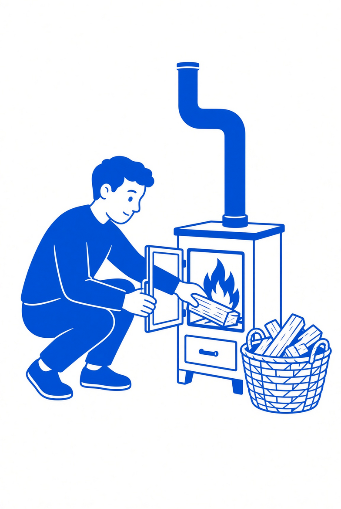
stoken
to stoke (a fire)
regelmatigrang 7177House & homegetekend
- Scene
- one adult crouches in front of a free-standing wood stove in a living room, holding the small stove door open with one hand while the other hand pushes a split log into the flames inside; a basket of logs stands on the floor beside the knees and a pipe rises from the stove.
- Must read
- a log being pushed through the open stove door into the flames.
- Avoid
- open palms held out towards a campfire (warmen); a pan on a cooking hob (koken); logs piled neatly against a wall (stapelen); a match held to a candle wick.
- Alt text
- Iemand zit gehurkt voor een houtkachel, houdt het deurtje open en legt er een blok hout in.
- Example
- Hij stookt de kachel met hout.
He stokes the stove with wood.
stoken.png · rang 7177 · B2 regelmatig · lexicon woorden.tsv
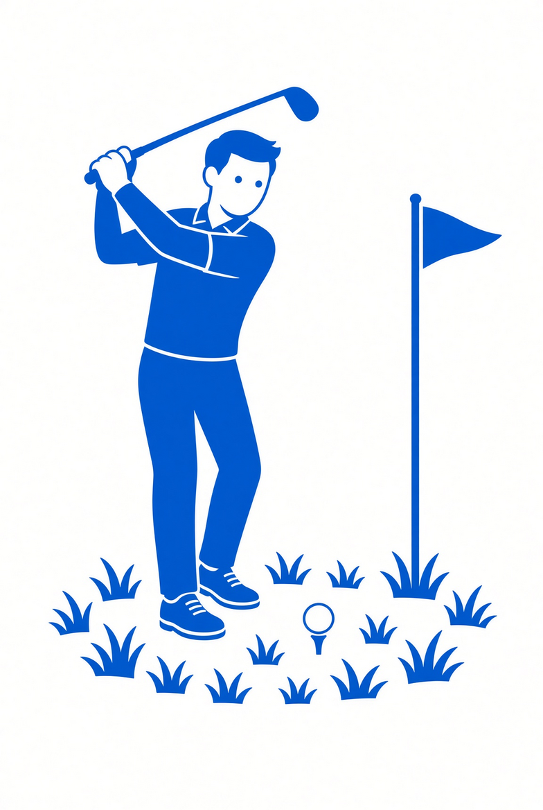
golfen
to play golf
regelmatigrang 7359Sport & gamesgetekend
- Scene
- one adult stands on short-cut grass with a club swung back over the shoulder, eyes on a small ball on a tee; a flag on a pole stands in the distance.
- Must read
- a club swung back over a small ball on a tee.
- Avoid
- a foot striking a ball (voetballen); a bat hitting a ball (slaan); an arm drawn back to throw (mikken); a person walking with a stick (lopen).
- Alt text
- Iemand staat op kort gras met een stok over de schouder, de blik op een klein balletje.
- Example
- Mijn opa golft elke zaterdag.
My grandfather plays golf every Saturday.
golfen.png · rang 7359 · B2 regelmatig · lexicon woorden.tsv
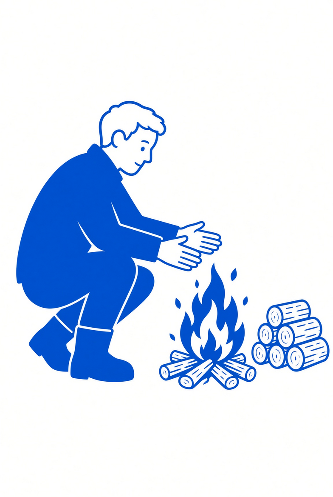
warmen
to warm (up)
regelmatigrang 7519Body & healthgetekend
- Scene
- one adult crouches beside a small campfire and holds both open hands out towards the flames, palms forward and shoulders hunched in a coat. A few logs lie in the fire and a small stack of wood waits beside it; nobody else is in the picture.
- Must read
- open palms held out towards a small fire.
- Avoid
- two palms rubbed together (wrijven); a hose aimed at flames (blussen); a loaf burning in an oven (verbranden); a pan on a stove (koken).
- Alt text
- Iemand zit gehurkt bij een klein kampvuur en houdt beide open handen naar de vlammen.
- Example
- Ze warmt haar handen aan de kachel.
She warms her hands by the stove.
warmen.png · rang 7519 · B2 regelmatig · lexicon woorden.tsv
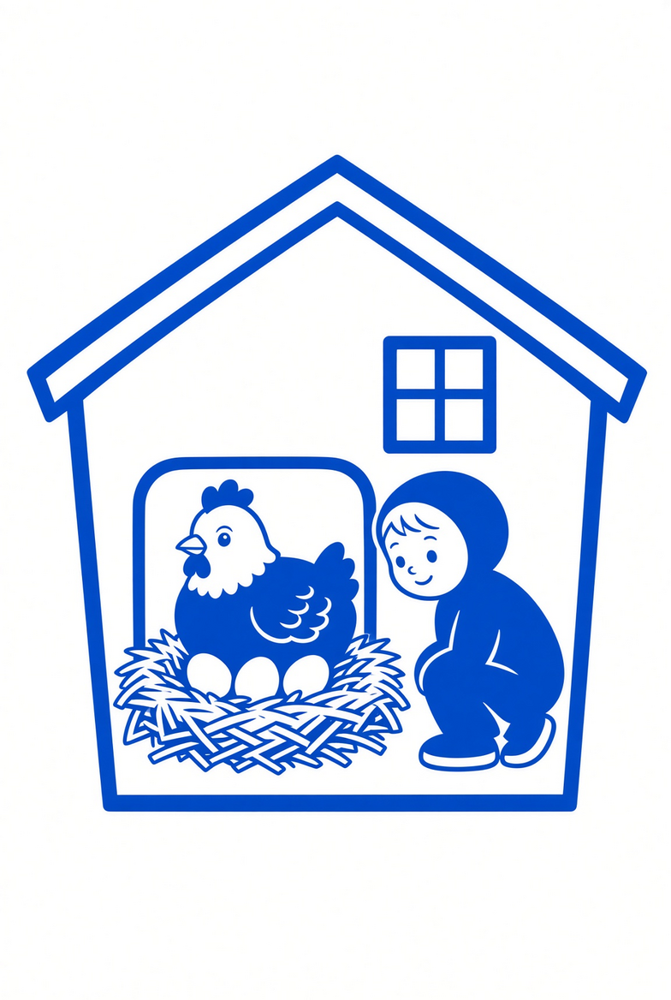
broeden
to brood (eggs)
regelmatigrang 7624Animalsgetekend
- Scene
- a hen sits puffed up on a nest of straw in a coop, a few eggs showing from under her; one child looks in through the small door. A small window lets in light behind the hen, and nothing else is in the coop.
- Must read
- a hen sitting on eggs in a nest.
- Avoid
- a bird in flight (vliegen); an egg cracked into a pan (bakken); grain thrown to chickens (voeren); chicks running about.
- Alt text
- Een kip zit dik opgezet op een nest van stro; onder haar zijn een paar eieren te zien.
- Example
- De eend broedt al drie weken op haar eieren.
The duck has been sitting on her eggs for three weeks.
broeden.png · rang 7624 · B2 regelmatig · lexicon woorden.tsv

stapelen
to stack
regelmatigrang 7675Sport & gamesgetekend
- Scene
- one child stands on the toes and places a last wooden block on top of a tall tower of blocks; the tower leans slightly. A few loose blocks lie on the floor round the child's feet, and nothing else is in the picture.
- Must read
- a hand setting a block on top of a tall tower.
- Avoid
- a wall built brick by brick (bouwen); a box carried in both arms (dragen); boxes lifted off a lorry (lossen); a box set down on the floor (zetten).
- Alt text
- Een kind legt op de tenen een laatste blokje boven op een hoge toren van blokken.
- Example
- Ze stapelen de dozen tot aan het plafond.
They stack the boxes up to the ceiling.
stapelen.png · rang 7675 · B2 regelmatig · lexicon woorden.tsv
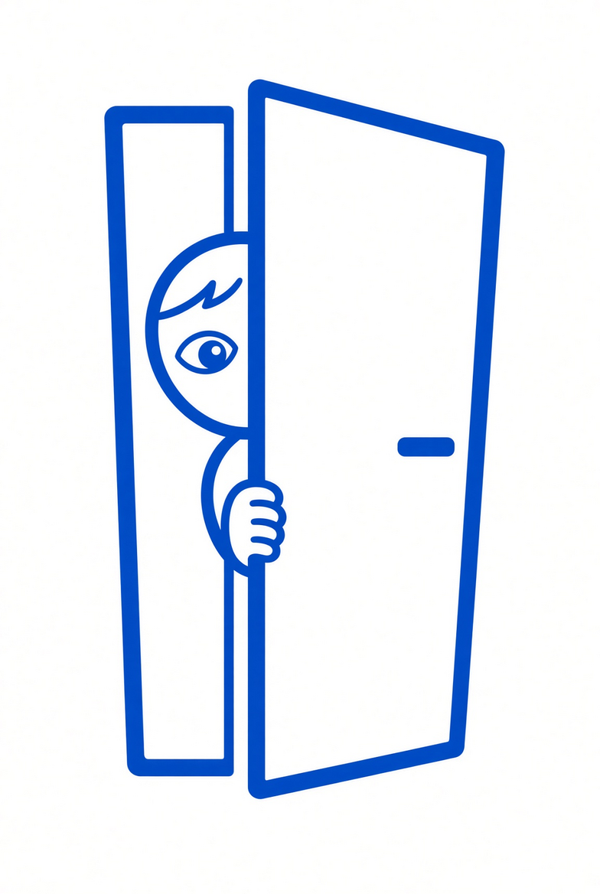
gluren
to peek
regelmatigrang 7720Movement & positiongetekend
- Scene
- one child stands behind a door that is open a crack and peers through the gap with one eye, one hand on the edge of the door; the rest of the body stays hidden.
- Must read
- one eye at the gap of a door left open a crack.
- Avoid
- a hand shading the eyes (kijken); an object hidden behind the back (verbergen); a door pulled wide open (openen); a person on tiptoe past a dog (sluipen).
- Alt text
- Een kind kijkt met één oog door de smalle kier van een deur.
- Example
- De kinderen gluren door het sleutelgat naar de cadeaus.
The children peek through the keyhole at the presents.
gluren.png · rang 7720 · B2 regelmatig · lexicon woorden.tsv
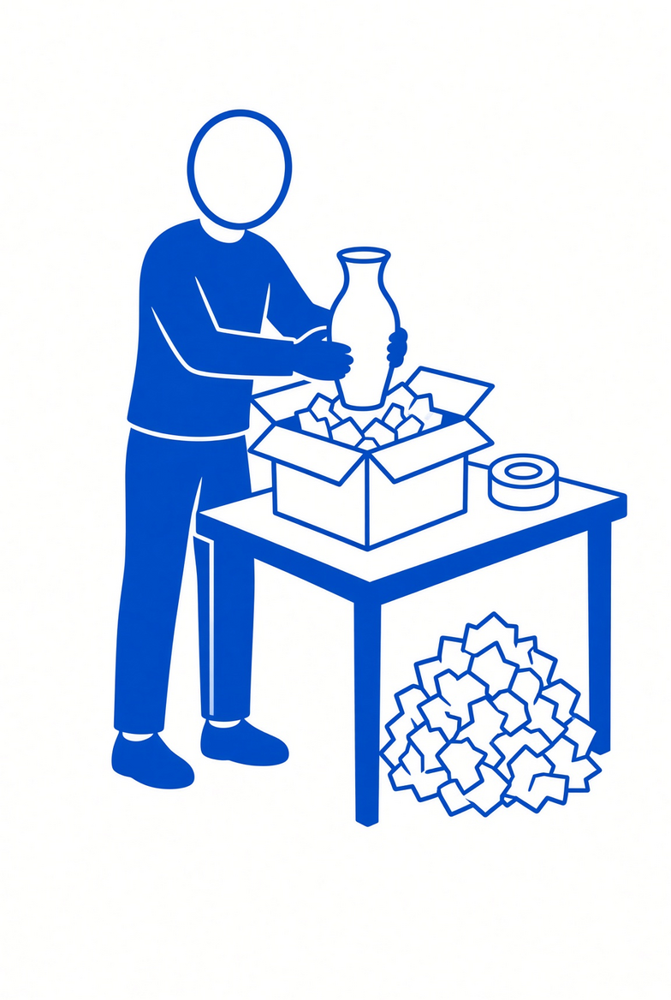
verpakken
to pack, to package
regelmatigrang 7897House & homegetekend
- Scene
- one adult stands at a table and lowers a vase into an open cardboard shipping box lined with crumpled paper; more crumpled paper lies heaped beside the box and a roll of tape waits on the table. The box flaps stand open.
- Must read
- an object lowered into padding inside an open cardboard box.
- Avoid
- paper folded round a present (inpakken); a box handed over (geven); a T-shirt folded in half (vouwen); a box opened and emptied (uitpakken).
- Alt text
- Iemand zet een vaas in een open doos vol propjes papier; ernaast ligt een rol tape.
- Example
- Wil je dit cadeau mooi voor me verpakken?
Would you wrap this gift nicely for me?
verpakken.png · rang 7897 · B2 regelmatig · lexicon woorden.tsv
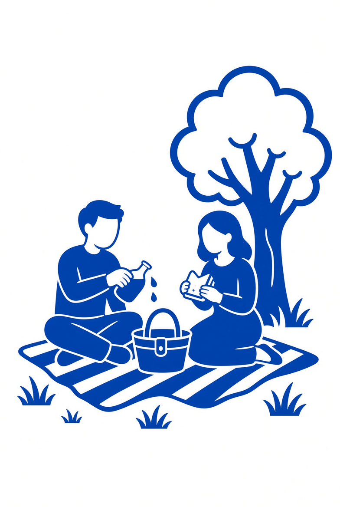
picknicken
to picnic
regelmatigrang 8237Sport & gamesgetekend
- Scene
- two adults sit on a blanket on the grass in a park with a basket between them, one pouring from a flask and the other holding a sandwich; a tree stands behind.
- Must read
- two people on a blanket with a basket between them.
- Avoid
- people eating at a table (eten); a person asleep on the grass (slapen); two people at a chessboard (schaken); two people on a bench (zitten).
- Alt text
- Twee mensen zitten op een kleed in het park met een mand tussen hen in.
- Example
- Als het mooi weer is, picknicken we in het park.
When the weather is nice, we picnic in the park.
picknicken.png · rang 8237 · B2 regelmatig · lexicon woorden.tsv

mikken
to aim
regelmatigrang 8284Sport & gamesgetekend
- Scene
- one adult stands with one eye closed, holding a crumpled paper ball at shoulder height and lining it up with a waste-paper basket across the room; the arm is drawn back, not yet thrown.
- Must read
- an arm drawn back with one eye closed, lined up on a basket.
- Avoid
- a ball in the air (gooien); a sheet dropped into a bin from close by (verwijderen); a finger pointing (wijzen); a club swung back over a ball (golfen).
- Alt text
- Iemand heeft één oog dicht en houdt een prop papier klaar, met de blik op een prullenbak.
- Example
- Hij mikt op de prullenbak, maar gooit er net naast.
He aims at the bin but throws just past it.
mikken.png · rang 8284 · B2 regelmatig · lexicon woorden.tsv
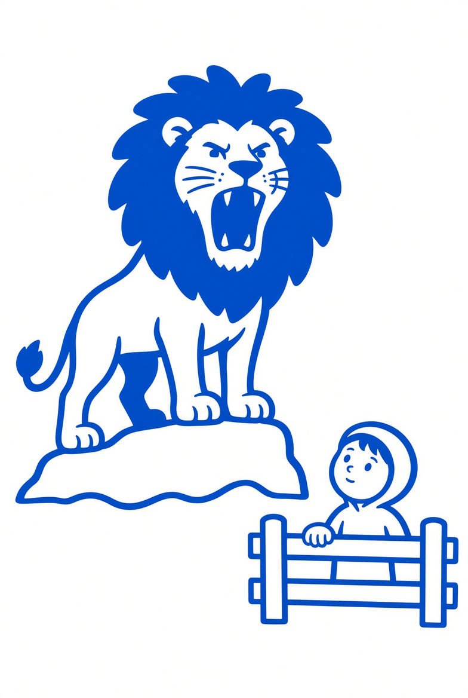
brullen
to roar
regelmatigrang 8333Animalsgetekend
- Scene
- a lion stands on a rock with its mane spread and its mouth wide open, head thrown forward; one child watches from behind a fence at a distance. The mane stands out round the head like a ring.
- Must read
- a lion with its mouth wide open.
- Avoid
- a dog with an open mouth at a gate (blaffen); a person shouting (roepen); a cat asleep (slapen); a person with a hand over an open mouth (gapen).
- Alt text
- Een leeuw staat op een rots met de bek wijd open en de manen wijd uit.
- Example
- De leeuw brulde zo hard dat de kinderen schrokken.
The lion roared so loudly that the children were startled.
brullen.png · rang 8333 · B2 regelmatig · lexicon woorden.tsv
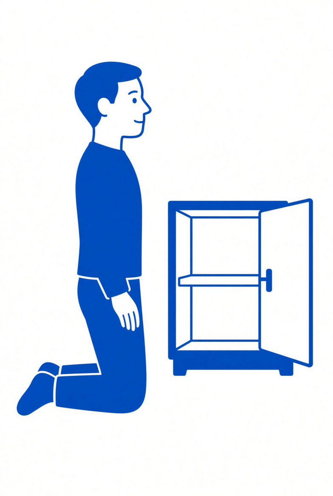
knielen
to kneel
regelmatigrang 8338Movement & positiongetekend
- Scene
- one adult kneels on both knees on the floor beside a low cupboard, back straight and upright, hands resting on the thighs, looking into the open cupboard. The cupboard door stands open and nothing else is in the picture. The person kneels on both knees with the thighs straight up, hips well above the heels and not resting on the lower legs, torso tall, hands on the thighs.
- Must read
- a person upright on both knees.
- Avoid
- hands folded with the head bowed (bidden); a person sinking to the knees (zakken); a person on hands and knees (kruipen); a person sitting with folded legs (mediteren).
- Alt text
- Iemand steunt met beide onderbenen op de vloer voor een laag kastje, het bovenlijf rechtop, de handen op de bovenbenen.
- Example
- Ze knielt om onder de kast te kijken.
She kneels to look under the cupboard.
knielen.png · rang 8338 · B2 regelmatig · lexicon woorden.tsv
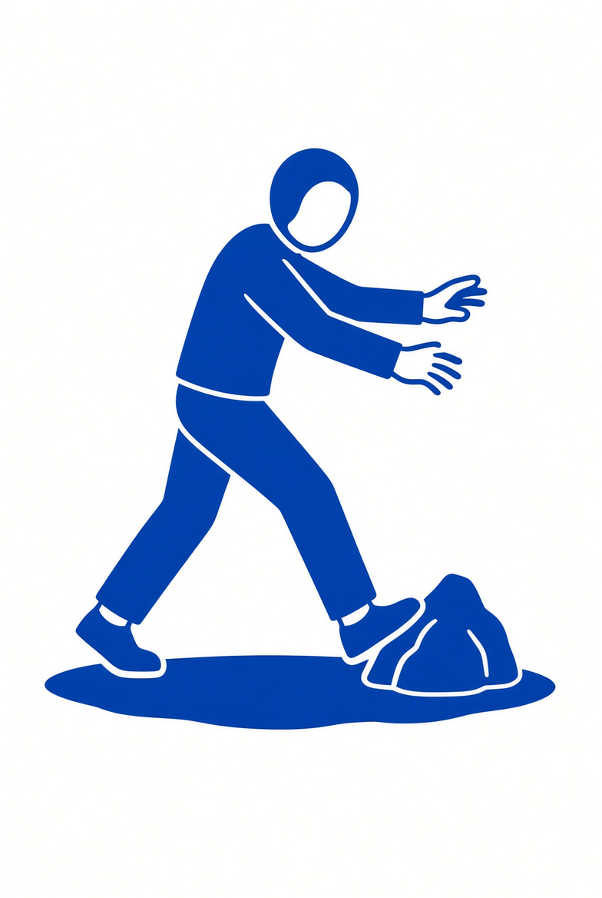
struikelen
to trip
regelmatigrang 8374Movement & positiongetekend
- Scene
- one adult walking along a path catches a foot on a stone and pitches forward, arms flung out in front, the back foot still on the ground. The stone sticks up from the flat path and nothing else is in the picture.
- Must read
- a foot caught on a stone with the body pitching forward.
- Avoid
- a person already lying on the ground (vallen); a person sinking to the knees (zakken); a person jumping (springen); a knee bumped on a table (stoten).
- Alt text
- Iemand blijft met een voet achter een steen hangen en schiet met de armen vooruit naar voren.
- Example
- Pas op, je kunt over die losse tegel struikelen.
Careful, you could trip over that loose tile.
struikelen.png · rang 8374 · B2 regelmatig · lexicon woorden.tsv

strelen
to stroke
regelmatigrang 8522Body & healthgetekend
- Scene
- one adult sits on a sofa with a cat on the lap and runs a flat hand along the cat's back from head to tail; the cat's eyes are closed.
- Must read
- a flat hand moving along a cat's back.
- Avoid
- a child hugging a teddy (knuffelen); fingernails on a forearm (krabben); a cat crouched before a mouse (jagen); a dog being brushed.
- Alt text
- Iemand zit met een kat op schoot en haalt een vlakke hand over de rug van het dier.
- Example
- Ze streelt de kat zachtjes over zijn rug.
She gently strokes the cat on its back.
strelen.png · rang 8522 · B2 regelmatig · lexicon woorden.tsv

wippen
to seesaw
regelmatigrang 8541Sport & gamesgetekend
- Scene
- two children sit at opposite ends of a seesaw in a playground; the left one is high in the air and the right one is low, feet pushing off the ground.
- Must read
- a seesaw with one child up and one child down.
- Avoid
- a child going down a slide (glijden); a child jumping (springen); two pans on a balance (wegen); a child on a swing.
- Alt text
- Twee kinderen zitten elk aan een kant van een lange plank; het ene kind is boven, het andere beneden.
- Example
- Mijn dochter wil graag met haar vriendinnetje wippen.
My daughter would like to play on the seesaw with her friend.
wippen.png · rang 8541 · B2 regelmatig · lexicon woorden.tsv
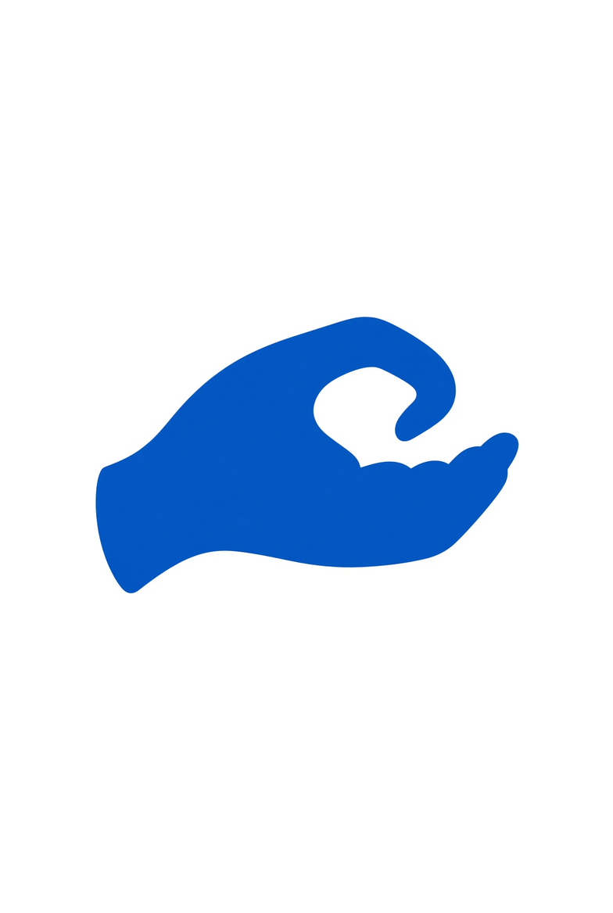
wenken
to beckon
regelmatigrang 8862Communication & languagegetekend
- Scene
- one single large hand shown from the front, the palm up, the index finger curled in a clear hook towards the palm and the other fingers folded in; nothing else.
- Must read
- one crooked finger curling back towards the body.
- Avoid
- a straight finger pointing away (wijzen); a whole hand raised to greet (groeten); open arms in a doorway for a guest (verwelkomen); a raised flat palm halting a child (verbieden).
- Alt text
- Een hand met een gekromde wijsvinger krult naar binnen.
- Example
- De ober wenkt ons naar een tafel bij het raam.
The waiter beckons us to a table by the window.
wenken.png · rang 8862 · B2 regelmatig · lexicon woorden.tsv